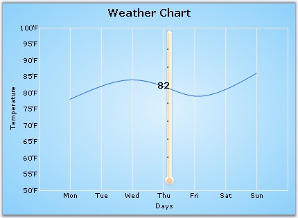

Strip-lines are bands that are drawn at the background of the chart. They can be used to highlight areas of interest. They can be either vertical or horizontal and may be specified with a variety of options to precisely control where they are placed and how they are repeated. The strip-lines are stored in the ChartAxis.StripLines collection, which holds objects of class ChartStripLine.
A strip-line is configurable by setting its start, end, period and width in the same value type as the axis that holds it. The interior of the strip-lines support gradients, images and different text positions and orientations.
|
Chart control Property |
Description |
|
BackImage |
Sets the background image for the stripline. |
|
DateOffset |
Gets / sets the offset of the stripline if the chart's PrimaryX-axis is of type Datetime and StartAtAxisPosition is true. Also see Offset. |
|
Enabled |
Enables the Stripline. |
|
End |
Gets /sets the end range (in double) of the stripline. Use this if the axis range type is Double. Also see EndDate. |
|
EndDate |
The end date of the stripline. Use this if the axis range type is DateTime. Also see End. |
|
Font |
The Font style in the which the stripline text if any will be rendered. |
|
FixedWidth |
Specifies a fixed width for the chart stripline. Normally, the width of the stripline changes when the axis range changes. You can also set the width to be fixed irrespective of the AxisRange, by specifying a width in this property. After setting a fixed width, the stripline width will not vary beyond / less than the value that is set. |
|
Interior |
Interior brush information for the stripline. |
|
Offset |
Gets / sets the offset of the stripline if the chart's PrimaryX-axis is of type Double and StartAtAxisPosition is true. Also see DateOffset. |
|
Period |
Gets / sets the period (width of the range) over which the stripline appears. |
|
PeriodDate |
Gets / sets the period (time span) over which the stripline appears if the value is DateTime. |
|
Start |
Gets / sets the start of the stripline. Also see End. |
|
StartAtAxisPosition |
Indicates whether the Stripline will start at the start of the axis range. |
|
StartDate |
The start date of the stripline. |
|
Text |
The text in the stripline. |
|
TextAlignment |
Alignment of the text in the stripline. |
|
TextColor |
The color of the text in the stripline. |
|
Vertical |
Indicates whether stripline is rendered vertically. |
|
Width |
The width of the stripline. |
|
WidthDate |
Gets / sets the width of the stripline in a Time span. |
The following is the code to draw a stripline from x-axis with DateTime values.
|
[C#]
//Declaring ChartStripLine stripLine = new ChartStripLine();
//Customizing the Stripline stripLine.Enabled = true; stripLine.Vertical = false; stripLine.Start = 140; stripLine.Width = 35; stripLine.FixedWidth = 30; stripLine.End = 175; stripLine.Text = "100% of Quota"; stripLine.TextColor = Color.Cyan; stripLine.TextAlignment = ContentAlignment.MiddleCenter; stripLine.Font = new Font("Arial", 10, FontStyle.Bold); stripLine.Interior = new BrushInfo(230, new BrushInfo(GradientStyle.Vertical, Color.OrangeRed, Color.DarkKhaki));
//Adding stripline to the X-axis this.chartControl1.PrimaryYAxis.StripLines.Add(stripLine); |
|
[VB.NET]
'Declaring Private stripLine As ChartStripLine = New ChartStripLine()
'Customizing the Stripline stripLine.Enabled = True stripLine.Vertical = True stripLine.Start = 140 stripLine.Width = 35 stripLine.FixedWidth = 30 stripLine.End = 175 stripLine.Text = "100% of Quota" stripLine.TextColor = Color.Cyan stripLine.TextAlignment = ContentAlignment.MiddleCenter stripLine.Font = New Font("Arial",10,FontStyle.Bold) stripLine.Interior = New BrushInfo(230, new BrushInfo(GradientStyle.Vertical,Color.OrangeRed, Color.DarkKhaki)))
'Adding stripline to the X-axis Me.chartControl1.PrimaryXAxis.StripLines.Add(stripLine) |
Figure 273: Chart with Stripline rendered in Y-Axis
Use an image as StripLine by setting through StripLine.BackImage property.

Figure 274: Chart with Image StripLine rendered in X-Axis